RECIPE
: 감자와 당근을 이용한

-
물을 700ml를 부어주고
물이 끓으면 카레가루 100g을
잘 풀어서 섞어주세요. - 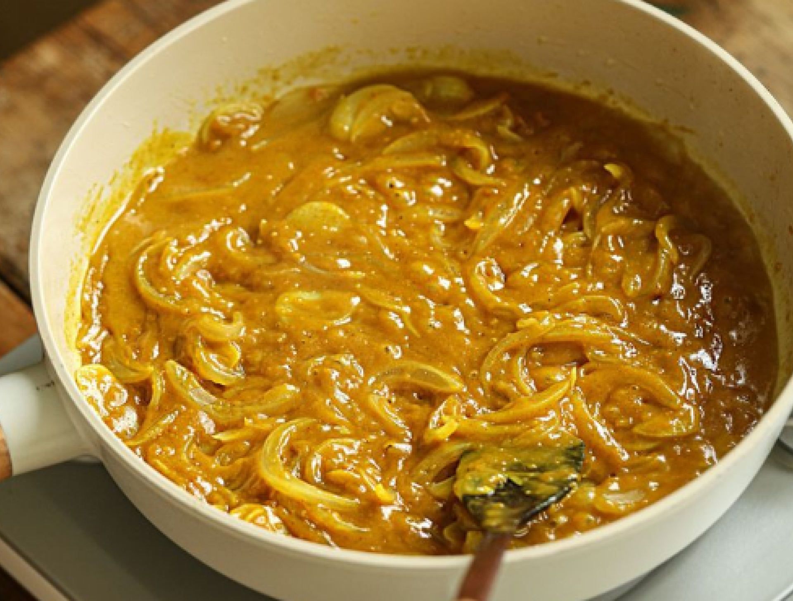
- 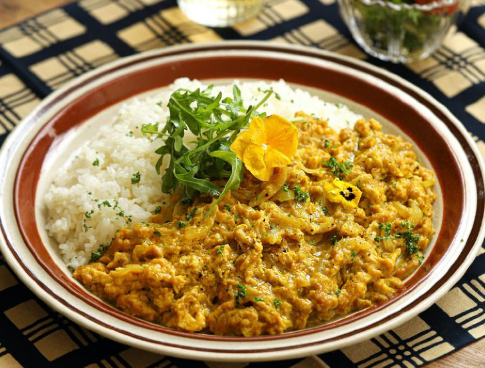
-
잘 졸여주시고 밥 위에
부어주면 카레 완성 !
- 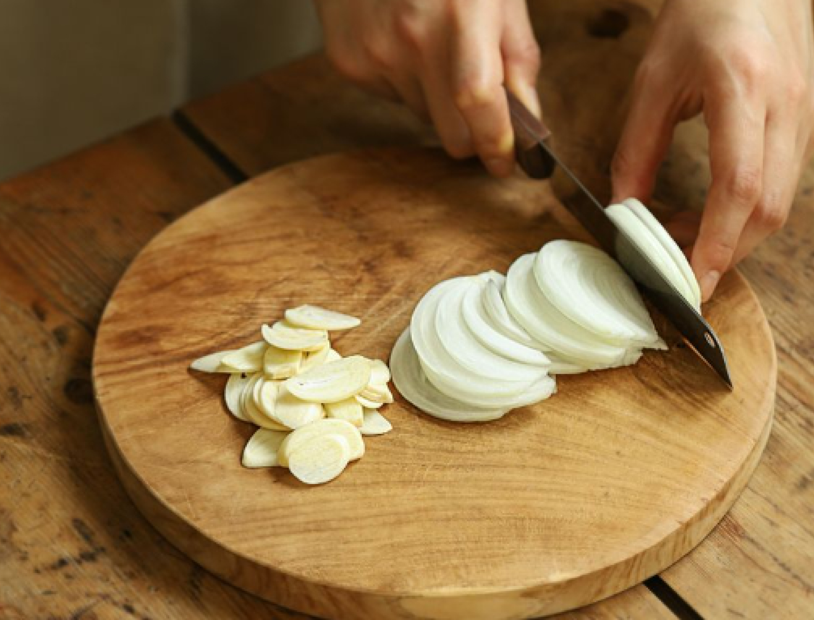
-
먼저, 감자와 당근을
준비해줍니다.
기호에 따라 고기와 양파 등을
준비해주세요.
-
안익는 감자부터 볶아주시고,
반투명해지면 차례대로
여러 재료들까지 볶아주세요. - 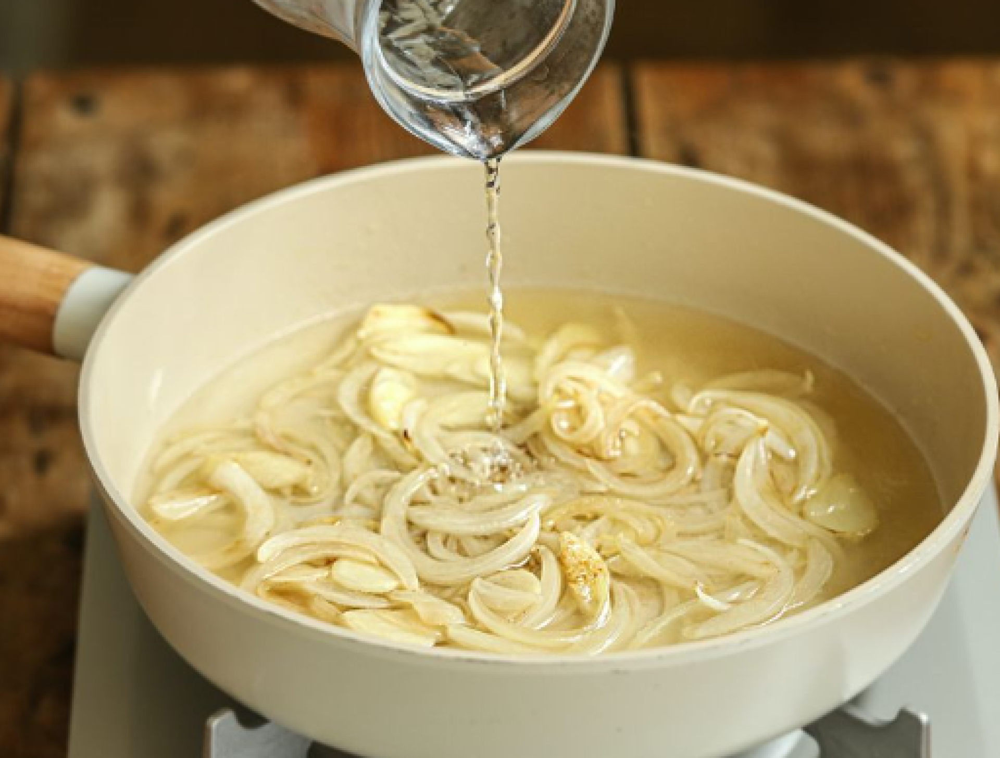
-
먼저, 감자와 당근을
너무 얇지 않도록 채를 썰어
준비해주세요.
필요에 따라 양파도 가능! - 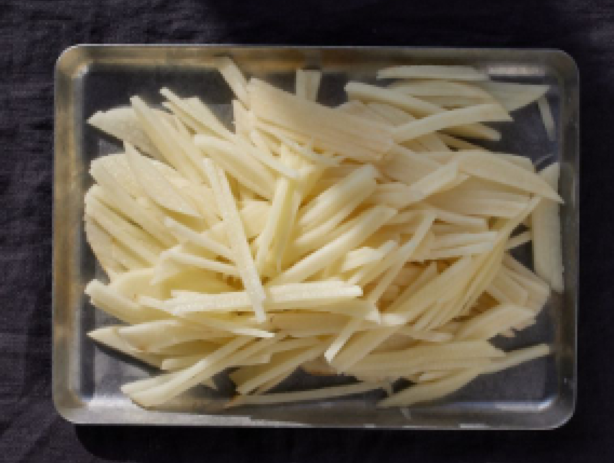
- 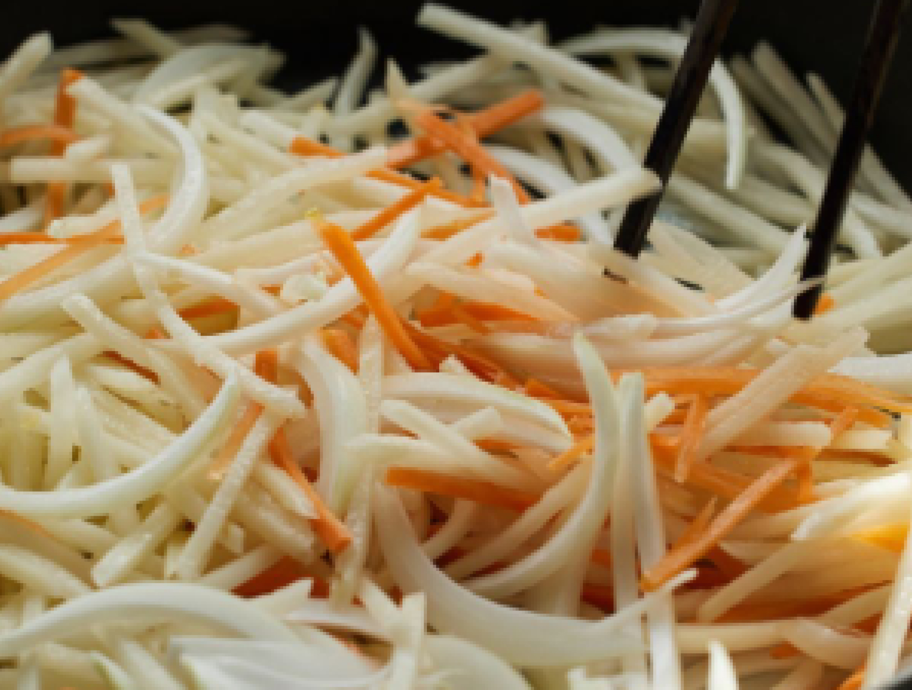
-
기름을 넉넉히 둘러주고
감자와 당근을 반투명해질
때까지 잘 볶아주세요.
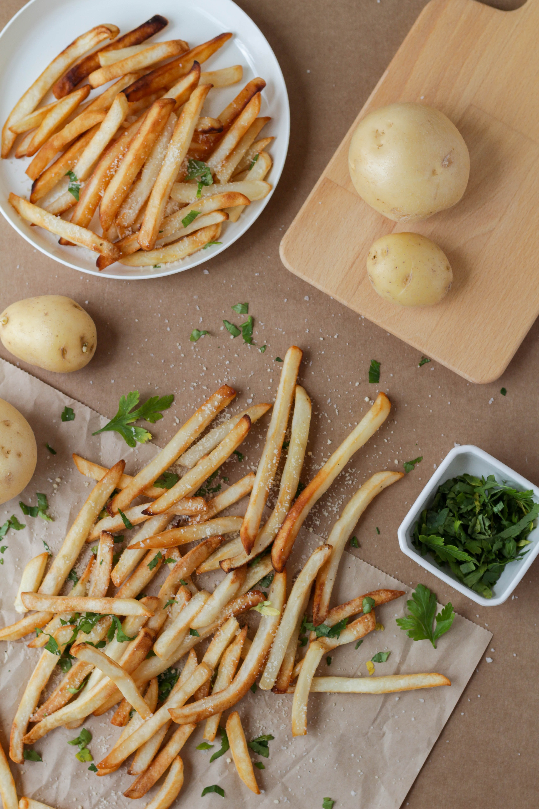
- 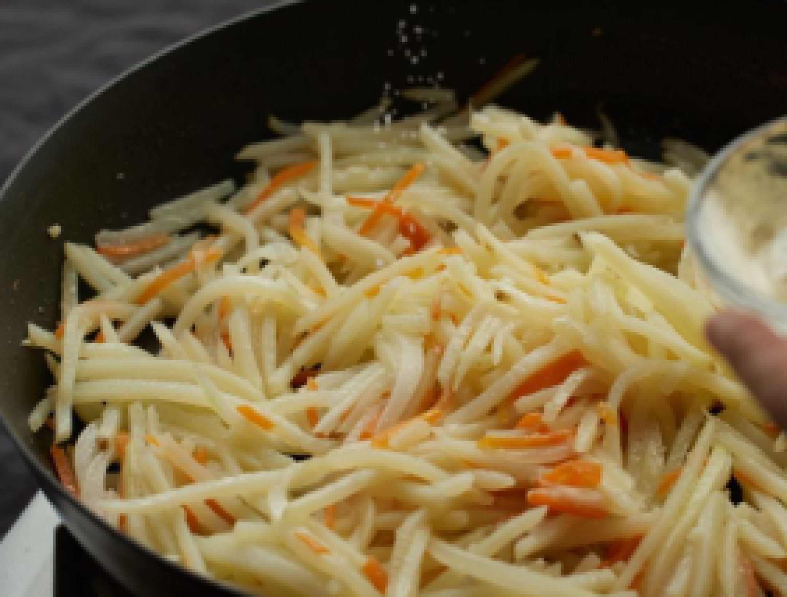
-
볶으면서 후추와 소금으로
간을 맞춰주세요.
-
물 한 스푼과
카레가루를 기호에 맞게
넣어주고 잘 볶아주세요. - 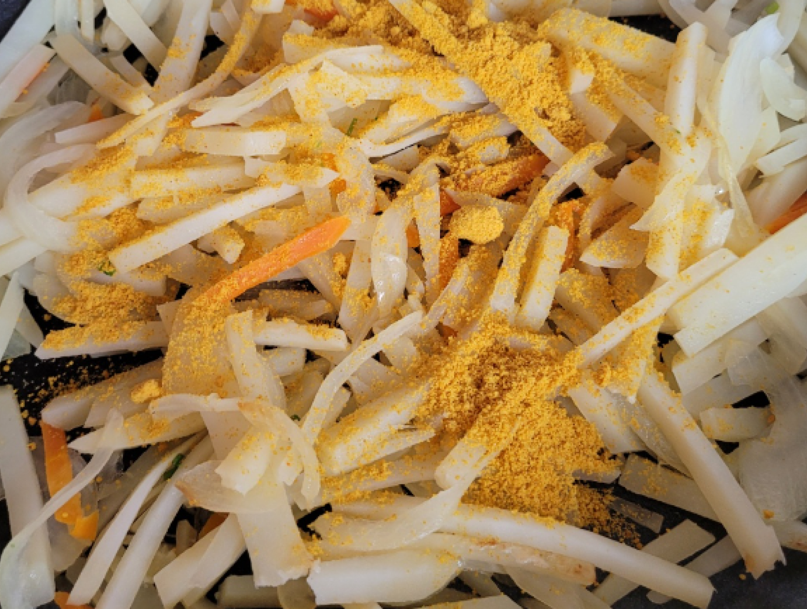
- 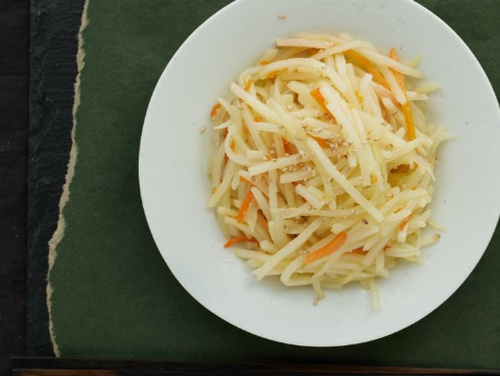
-
그럼 카레 감자 채볶음 완성 !
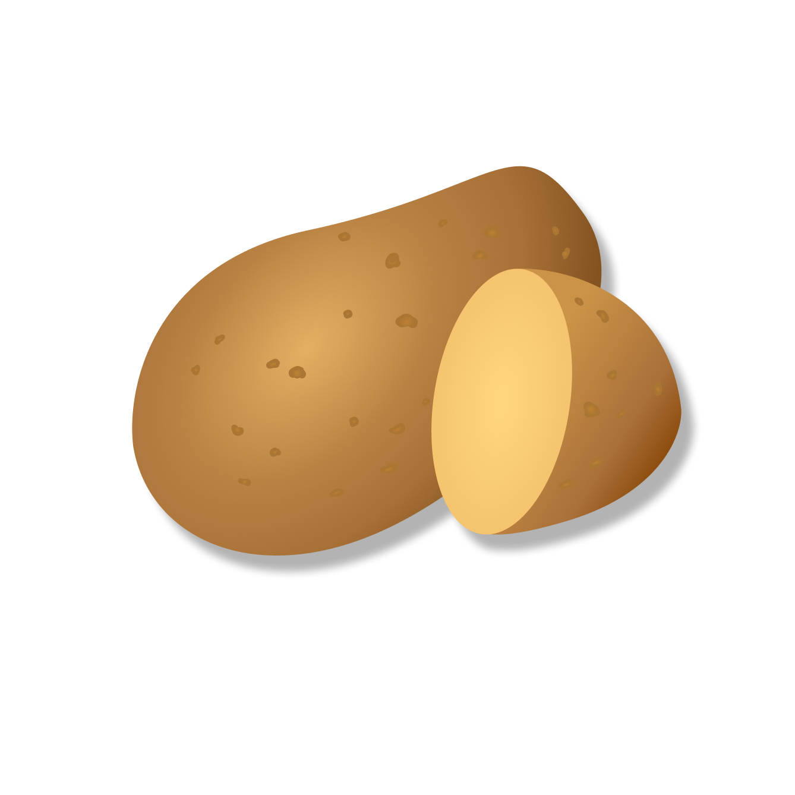
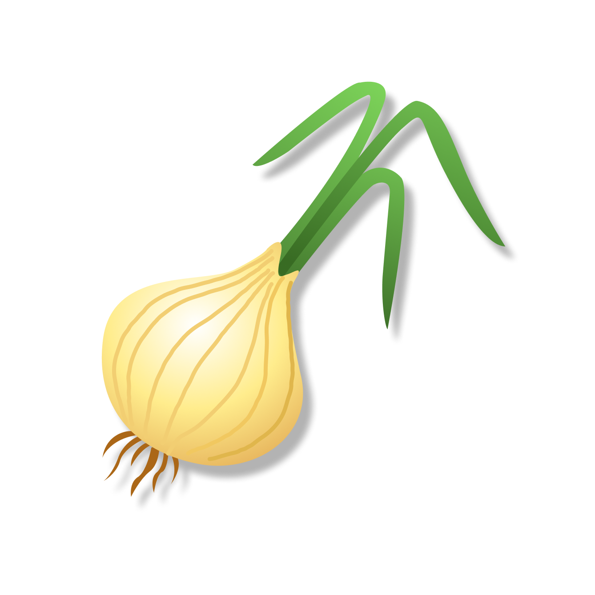